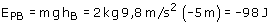

|
b)  Cuando el objeto se desplace desde B hasta el origen de potencial el campo gravitatorio realizará un trabajo de -98 J Resulta un trabajo negativo porque la fuerza se opone al desplazamiento (El planeta atrae al objeto y este se aleja del centro) |